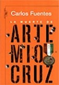

La muerte de Artemio Cruz
Los últimos momentos de la vida de un hombre poderoso, un soldado revolucionario, un amante sin amor, un padre sin familia... un hombre que traicionó a sus compañeros, pero que no pudo soportar las heridas que le infligió el destino. Carlos Fuentes nos revela los procesos mentales de un viejo que ya no es capaz de valerse por sí mismo y que se halla postrado ante la muerte inminente e indigna, pero su voluntad -que le ha otorgado una posición sobresaliente en la sociedad- se resiste a dejarse vencer. Usando una brillante técnica narrativa, que reúne en un solo texto el consciente, el subconsciente y la narración objetiva, el pasado, el presente y el futuro, Fuentes nos conduce por las entrañas de la Revolución, el sistema político mexicano y la idiosincrasia de las clases dirigentes.
Referencias
- https://www.lecturalia.com/libro/2389/la-muerte-de-artemio-cruz
- Avanza Noveno 9